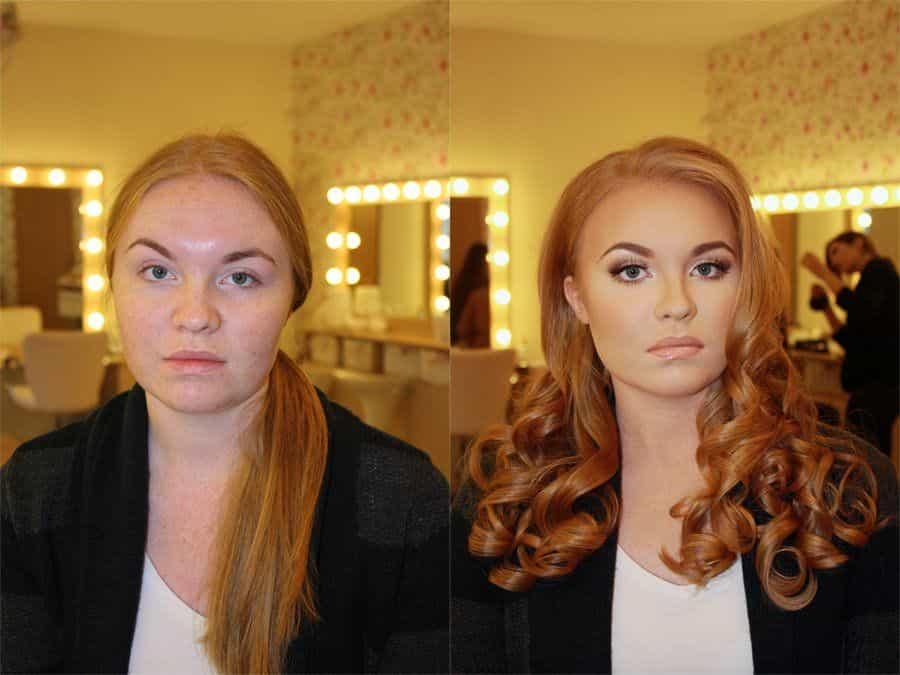
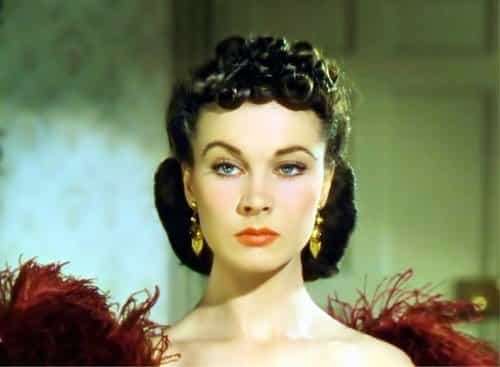

Corey is an iconoclast and the author of 'Man's Fight for Existence'. He believes that the key to life is for men to honour their primal nature. Visit his new website at primalexistence.com


As feminism-infused women lay waste to modern civilization by destroying men and families, it is becoming more important than ever for the awakened men to filter out these toxic women from their lives. While much is said about the intricacies of female nature and women’s ability to toy with man’s passions, there is a faster and more efficient method to detect red flags out of women: through their body characteristics. You see, unlike words that can be easily manipulated, it is far more difficult to hide one’s true nature expressed in the face and elsewhere. A woman’s personality tend to be expressed through her body more than she realizes.
While the following characteristics may seem obvious when pointed out, it may be much harder to recognize them when you’re actually interacting with women. And once you do discover them next time, know that it’s not enough to simply refuse having a relationship with these women; if possible, you must avoid them completely lest their toxic negativity poisons you.
Women with fish mouth always have some serious attitude problems. They have chip on their shoulders and they’re looking for ways to stir conflict non-stop. If you’re ever wondering how they even developed those mouths, it’s the result of their constant snarking and bitching. Not surprisingly, many feminists and SJW’s (including some men) bear this tell-tale sign on their faces.

Dyed hair, butchered hair, tattoos like a gang member, piercings and rings like a pirate, and other freakish ways to attention-whore are all huge red flags. I wouldn’t even treat a man who turns his body into a post-modern art seriously, so why should you with women?
The thousand cock stare is hard to describe in words: you either recognize it or you don’t. I think the best way to describe it would be as a vapid lifelessness of a woman who’s trying her best to hide her slut past and post-wall desperation. It’s not surprising that they often resemble a recovering addict—which they are, in some ways. They also tend to look older than their real age as excessive alcohol and cocks destroyed their youth. I knew one gorgeous girl, who was the closest thing to a 10 I’ve seen in my life, hit the wall with visible TCS by the time she reached 24.
Guess what this one ended up doing.
Crazy eyes are so glaringly obvious that I’m surprised there are men who still marry these women. If the eyes are the window to the human soul, you can tell that these women are deranged and unstable. Having a relationship with a crazy eyed woman is as dangerous as carrying a box of nitroglycerine on a shopping cart that only has three wheels.

I’ve never found girls who are afraid to show their natural face attractive, and for a good reason. Women who cover their face with makeup are not only hiding their ugly faces but also their ugly personalities as well. I have yet to meet a decent woman who constantly wears thick makeup (even when swimming). On the other hand, I generally find that the less makeup a woman puts on, the more pleasant her personality and attitude is.
“Could you be so nice as to do me a favor you would never do if I didn’t have a vagina?”
The reason why men tell women to smile more and why feminists go berserk in response is because a smile can tell you a lot about a woman. I get the impression that North American women stopped smiling at a collective level to put up a bitch shield against the hordes of thirsty males.
On the flip side, I notice that more and more women are using fake smiles to tease their beta-orbiters into currying favors. For the desperate simps, even the slightest female approval is the closest thing to a sex they’ll ever experience, which is why they’ll always be ready to jump any amount of hoops in order to earn it—and the women know this. One girl (who was much younger than I) tried to turn me into her servant by telling me to fetch something for her. You should have seen just how fast her fake smile disappeared when I told her “no.”
Would you put a ring on her next finger?
I don’t know where girls started getting the idea that it’s hip to be crass, but the phenomenon is epidemic now. I’ve even seen one teenage girl give the finger to her father as a joke (the cuck just laughed it off). There’s no reason for a woman, even as a joke, to be using the finger.
Belligerent and confrontational women love to get in people’s faces. If you see a girl who habitually pushes her head forward like a chicken to make a point, lose her. You have nothing to gain by interacting with her.
Forward head as a posture may also be a sign of too much cellphone use. Besides, it just looks plain ugly. One of the things I noticed about foreign women when I moved out of North America is how almost all of them have a much graceful posture with their heads straight up.
The alpha smirk isn’t even common among men as it is only used by the smug and cocky ones who are full of themselves (not that it’s necessarily a bad thing for a man). So, if you see a woman is doing it, you can be sure that she is pure toxic. I have yet to meet a woman who smirks who weren’t total manipulative, back-stabbing, dark-triad whore.
A sign of high testosterone. These chicks want to be seen as tough and they will put up this front as if they just grew a dick. I admit I used think these “tough” chicks were hot, but that was when I was 13 years old.
Newsflash: If you think girls with this look or personality is attractive, you’re most likely a supplicating simp.

Similar to tough look, women today seem to think that their inflated SMV value and career elevates them far above the commoners they see around them. Even if woman is deservedly in a high position, her lack of modesty equates to arrogance and zero empathy. It’s no surprise that many of these women can’t hold onto a man and will most likely die alone.
Another pathetic attempt to puff up and appear stronger than they actually are. This is rare, but I’ve actually seen few cringe-worthy women who would deliberately lower their voices to yell in people’s faces. There’s zero reason for a woman to force herself to sound more like a man. Mock or avoid these types completely.

The universal “I’m a woman begging for your respect” pose.
You’ll see this body language with insecure career women desperate for everyone else around them to see them as being strong and capable. Anything short of groveling will trigger these type of women into a hissy fit. As an example, I personally had one older manager (who was desperately single) who would always do this pose with her hands not on her hips, but all the way up almost at her chest level. She also had 10, 11, and 12 listed above. Everyone at work thought she was obnoxious and ridiculous, but didn’t do anything to challenge her. I was the only person who would not take her shit. And every time I refused to “respect” her, she would throw a tantrum like a fat kid being denied an ice-cream. Eventually, she filed a false accusation against me just as I started being more soft towards her.
My experience shows that even if you’re not in relationship with these women, and even if you try to pander to them, they will find ways to infect you with their blackened soul. Be aware and be alert. Because if you let your guard down, they will destroy you.
Read More: 10 Reasons Why You Must Study Body Language